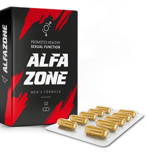
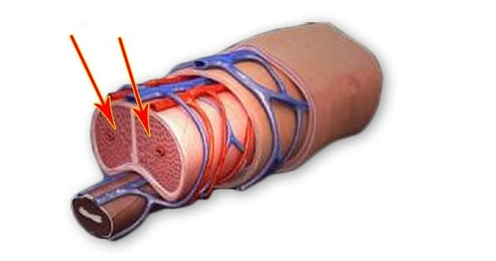

COMO TER DE VOLTA A POTÊNCIA APÓS 50 ANOS DE IDADE? – É FÁCIL!
Não é segredo que muitos homens acima de 50 anos de idade, ou até mais jovens, frequentemente têm problemas de potência. Para saber mais desse problema e, o mais importante, de como é possível resolvê-lo, convidamos à entrevista o médico urologista e andrologista, professor André Soares de Oliveira.Jornalista: Começarei por uma pergunta muito importante: porque é que os homens têm problemas de potência?
Ao longo dos anos, o corpo começa a produzir menos testosterona. A testosterona é o principal hormônio masculino. É responsável pela atividade sexual, este desempenha um papel importante na produção de espermatozoides. O conceito de "masculinidade" está relacionado com ela. Quanto mais testosterona o homem tem no sangue, maior é a autoconfiança dele, bem como o humor e, naturalmente, o nível de excitação. Este hormônio é produzido nos testículos. A concentração dele no sangue de 11-33 nmol/l é normal. Mas entre 45 e 50 anos de idade, ou até mais cedo, a produtividade dos testículos começa a diminuir junto com a concentração de testosterona no sangue. Acontece uma pausa androgénica, que pode levar a uma impotência sexual completa.
Sinais alarmantes:
- Mau humor, dúvidas de si mesmo
- Diminuição do crescimento do cabelo e dos pelos
- Perda muscular, fadiga precoce
- Diminuição da libido
- Insónia, irritabilidade
- Anemia
- Aumento inchada
- Ereção instável ou ausência da mesma
- Infertilidade
Jornalista: Com qual concentração de testosterona no sangue os homens gerlamente têm problemas de potência?
Doutor: Depende, mas problemas começam quando a concentração é de 8-9 nmol/l. Quando esta é de 5-6 nmol/l "falhas" durante relacionamentos íntimos tornam-se regulares. Este é o primeiro indicador alarmante da impotência. Além disso, surge um medo de intimidade devido a uma possível falha, e os homens recorrem a vários remédios.
Jornalist: como Viagra, por exemplo?
Doutor: o Viagra é o remédio sintético mais famoso, mas ao mesmo tempo é muito perigoso. Eu não recomendaria usar o Viagra e remédios similares, apenas sob um estrito controlo de um médico. Em primeiro lugar, existem muitos efeitos colaterais; em segundo lugar, se o homem já tem algo errado com o coração, na melhor das hipóteses ele poderá acabar num hospital, na pior das hipóteses - morrer.
Jornalista: Existem algumas chances de aumentar a potência de maneira natural – como, recusar-se do álcool, tabagismo, manter uma nutrição adequada, praticar exercícios?
Doutor: O estilo de vida importa, mas existe um outro fator ainda mais importante - o envelhecimento do corpo. Diferentes estudos demonstraram que após 45 anos de idade, independentemente do estilo de vida, a concentração de testosterona no sangue diminui 2-3% por ano. Claro, existem alguns homens que conseguem manter um alto nível de testosterona mesmo na velhice, mas é uma exceção.
Jornalista: Ou seja, para manter a potência após 50 anos de idade, é preciso usar métodos adicionais para aumentá-la?
Doutor: Exatamente. Mas poucas pessoas sabem o que deve ser tomado para não causar danos irreparáveis à saúde. Eu e o meu grupo de estudantes monitoramos constantemente os medicamentos que têm surgido no mercado. Posso dizer que até recentemente não havia meios para o aumento da potência seguros para a saúde. Todos os medicamentos conhecidos têm efeitos colaterais e, usados frequentemente, podem danificar o coração, fígado ou outros órgãos. E todos se vendem a um preço altíssimo.
Jornalista: O senhor acabou de dizer “até recentemente”. Você quer dizer que um medicamento eficaz e seguro já tinha surgido?
Doutor: Certo. Há pouco nós levamos a cabo várias pesquisas em relação a um medicamento, e nós realmente gostamos dos resultados dele.
Jornalista: De que remédio se trata? É igual ou diferente do Viagra?
Doutor: Este remédio chama-se . Ao contrário do Viagra, este contém dois complexos de substâncias. Um deles é responsável pela excitação rápida, dentro de 5-7 minutos após a aplicação. O segundo estimula os testículos que gradualmente vem recuperando as suas funções. Portanto, podemos dizer que o , já desde o primeiro uso, tem um efeito poderoso sobre a ereção, mas, além disso, este aumenta o nível de testosterona no corpo. Ou seja, o homem já pode deixar de tomar o remédio já em um mês.
E uma característica importante que o difere do Viagra, é que o não têm efeitos colaterais, este é completamente seguro, pois conter apenas ingredientes naturais.
O afeta quase instantaneamente os tecidos cavernosos do pénis, provocando uma ereção rápida.
Jornalista: o já foi testado?
Doutor: Há três meses, sob o meu controlo, no nosso centro de pesquisa foram levados a cabo os testes do . O grupo de voluntários consistiu em 50 homens com idade entre 45 e 65 anos. O medicamento foi tomado 1 vez por dia. Após um mês, o nível de testosterona em todos os participantes aumentou em média 3 nmol/l. Mesmo nos casos mais graves, se o nível inicial foi de 3 nmol/l , em 3 meses era possível atingir o nível de 9 nmol/l. Vale notar também que todos os participantes, mesmo os que tinham entre 60 e 65 anos de idade, disseram que sentiram-se bem melhor. Eles ficaram mais enérgicos e alegres. Tal pode ser explicado, pois a testosterona é rotulada como o principal combustível do corpo masculino.
Os resultados dos testos do "":
- Todos os indivíduos tiveram uma ereção forte dentro de 5-7 minutos após tomar o remédio;
- Durante o período dos testos, a concentração de testosterona no sangue aumentou significativamente ;
- A maior parte dos voluntários notou um aumento na duração de relação sexual;
- O orgasmo melhorou.
Jornalista: Eu acho que os nossos leitores gostavam de saber onde eles podem comprar o .
Doutor: No momento, este remédio pode ser encomendado on-line no site oficial do fornecedor, ao preencher um formulário de pedido. Esperamos que as pessoas apreciem o efeito do remédio. Este pode ser entregue a qualquer lugar, em uma embalagem anônima. Também gostava de dizer que, se vocês têm problemas com a potência, não entrem em desespero. A solução desse problema é encontrada. Fiquei muito feliz ao ver que os nossos voluntários saíram do nosso centro contentes. Muitos deles ainda têm a chance de viver uma vida plena.
Comentários
As cápsulas do são realmente boas. Já tomei elas. Aos 43 anos, surgiram problemas de potência por causa do divórcio. O remédio ajudou. Sinto-me muito melhor - como se tivesse apenas 20 anos de idade =)
Preciso pedir para o meu marido, já não me lembro de quando tínhamos um sexo normal. Ele tem 61 anos de idade, eu tenho 49. Não queria acabar a minha vida sexual tão cedo. Espero que o remédio ajude.
O remédio é o melhor de todos. Posso garanti-lo, já que o meu marido tinha o mesmo problema. Mas o ajudou muito – nem na juventude tínhamos um sexo assim, como temos agora
Quais são os prazos de entrega? Gostava de encomendar, mas duvido que esteja pronto para aguardar muito tempo.
A entrega é muito rápida, 2 ou 3 dias!
Há muito tempo que uso o . Este cumpre a sua tarefa muito bem
Será que não tem efeitos colaterais mesmo?
Após 5 meses de uso, posso dizer que não tem efeitos colaterais mesmo. A qualidade da minha vida sexual melhorou significativamente, isso pode ser considerado um efeito colateral?
Será que é seguro usar o todos os dias?
Completamente seguro.